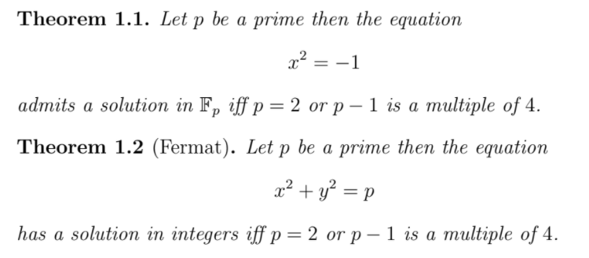
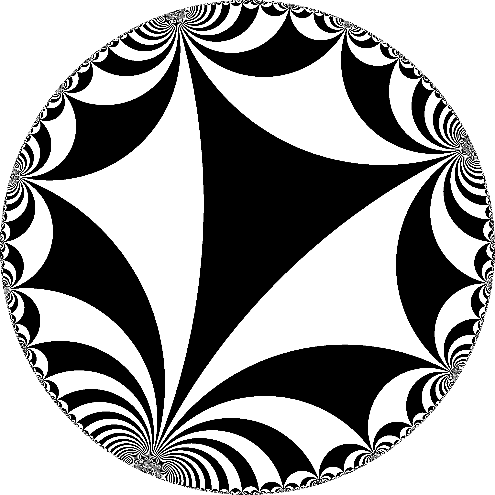
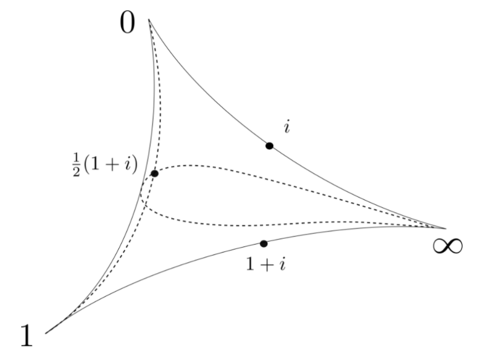
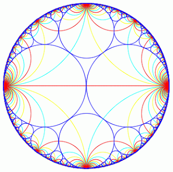
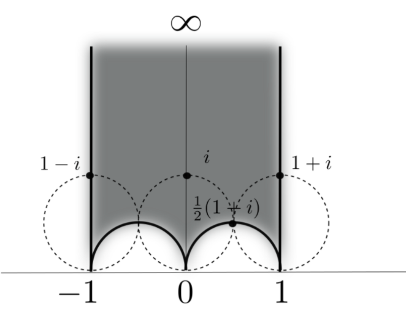

Geometry of sums of squares
greg mc
Tokyo December 2021

- Proofs from THE BOOK
- Convexity and Aigner’s Conjectures
- Can I prove these with one figure ?
hyperbolic geometry proof of

Markov numbers are integers that appear in triples which are solutions of a Diophantine equation the so-called Markov cubic
\(x^2 + y^2 + z^2 - 3x y z = 0.\)
\((1,1,1),(1,1,2),(1,2,5),(1,5,13)\)
Odd index Fibonacci numbers are Markoff numbers
\(1, 1, 2, 3, 5, 8, 13, 21, 34, 55, 89, 144, 233, 377, 610, 987, 1597, 2584, 4181, 6765, 10946, 17711, 28657, 46368, 75025, 121393, 196418, 317811, ...\)
\((1,1,1),(1,1,2),(1,2,5),(1,5,13)\)
Markoff numbers

observation
- Every integer appears to appear at most 6 times
Multiplicity $
Frobenius uniqueness conjecture
- The largest integer in a triple determines the two other numbers.
- On the modular torus \(\mathbb{H}/\Gamma'\), if \(m\) is a Markoff number then
- there are exactly 3 simple closed geodesics
- of length \(2\cosh^{-1}(3m/2)\)
Partial results
\(m\) = Markoff number
- Jack Button for m prime
- Zhang An elementary proof…
- Baragar m, 3m - 2, 3m + 2 prime
- Bugeaud, Reutenauer, Siksek
- Conclusion too hard!!!
Button’s Theorem
If \(z\) is a Markoff number which is prime
then there is a unique triple \(z > y > x\)
\(x^2 + y^2 + z^2 - 3x y z = 0.\)
- so when we take congruences in \(\mathbb{F}_z\)
- \(\bar{x}^2 + \bar{y}^2 = 0\)
- \((\bar{x}/\bar{y})^2 = -1\)
- Button’s theorem follows from unicity of
the sum of squares decomposition
two groups of order 4
Acting on \(\mathbb{F}_p^*\)
\(\begin{array}{lll} x &\mapsto& -x \\ x &\mapsto& 1/x \end{array}\)
Acting on \(\mathbb{H}\)
\(\begin{array}{lll} z &\mapsto& -\bar{z} \\ z &\mapsto& 1/\bar{z} \end{array}\)
Farey tessalation

arcs on the 3 punctured sphere

- \(i, 1+i, \frac12 ( 1 + i)\) are midpoints
Ford circles

Ford circles
References etc
- Heath-Brown, Fermat’s two squares theorem. Invariant (1984)
- Zagier, A one-sentence proof that every prime p = 1 (mod 4) is a sum of two squares, 1990
- Elsholtz, Combinatorial Approach to Sums of Two Squares and Related Problems. (2010)
- Penner, The decorated Teichmueller space of punctured surfaces, Comm Math Phys (1987)
- Zagier text
Zagier

Let’s get started
Burnside Lemma
\(G\) acting on \(X\) then
\(|G| |X/G| = \sum_{g} |X^g|\)
- \(X^g\) = fixed points of the element \(g\)
- \(X/G\) the orbit space.
Theorem 1.1
Acting on \(X = \mathbb{F}_p^*\)
- identity \(|X^g| = p-1\)
- \(x \mapsto -x, |X^g| = 0\)
- \(x \mapsto 1/x, |X^g| = 2\)
- \(x \mapsto -1/x, |X^g| = \ldots\)
…calculation
- \(|G| |X/G| = \sum_{g} |X^g|\)
- \(4 |X/G| = (p-1) + 2 + |X^{(x\mapsto -1/x)}|\)
- so \(4\) doesn’t divide \((p+1)\)
- \(\Rightarrow |X^{(x\mapsto -1/x)}|= 2\)
- \(\Rightarrow \exists x,\, x^2 = -1\)
adapting for Fermat
Theorem 1.2: sum of 2 squares
Acting on \(\mathbb{H}\)
\(\begin{array}{lll} z &\mapsto& -\bar{z} \\ z &\mapsto& 1/\bar{z} \end{array}\)
Primitives
- \(\mathbb{Z}^2\)
- infinitely many primitive elements
- \((a,b)\) primitive iff \(a,b \in \mathbb{Z}\) coprime
- \(SL(2,\mathbb{Z})\) transitive on primitives
Important
\(\{ \textit{primitives} \} = \mathbb{Q}\cup \infty \subset\) circle/projective line \(= \partial_\infty \mathbb{H}\)
Farey tessalation
\(\mathbb{Q}\cup \infty \subset\) circle/projective line
- \((a,b)\text{ primitive } \mapsto a/b \in \mathbb{Q}\cup \infty\)
- \(\begin{pmatrix} a & c \\ b & d \end{pmatrix} \in \mathrm{SL}(2,\mathbb{Z})\mapsto\) arc joining \((a/b, c/d)\)
- \((a/b, c/d)\) are Farey neighbors


Definitions
- arc = Poincaré geodesic joining \(a/b, c/d \in \mathbb{Q}\cup \infty\)
- \(\lambda\)- length of arc \(= |ad - bc|^2\)
Lemma
\(\log \lambda\)- length = length of the portion outside Ford circles tangent to the real line at its endpoints
Ford circles
\(\mathrm{SL}(2,\mathbb{Z})\) acts by Mobius transformations on \(\mathbb{H}\)
- \(\begin{pmatrix} a & c \\ b & d \end{pmatrix}.z = \frac{az+b}{cz+d}\)
- preserves the Poincaré (hyperbolic) metric
- the orbit of \(F := \{ z, \mathrm{Im}\, z > 1\}\) are the Ford circles

- point of tangency with \(\mathbb{R} = p/q\), diameter = \(1/q^2\)
Lemma
- arc joining \(a/b, c/d\) has \(\lambda\)- length \(= |ad - bc|^2\)
- \(\log \lambda\)- length = length of the portion outside Ford circles tangent to the real line at its endpoints
Proof of lemma
- \(\mathrm{SL}(2,\mathbb{Z})\) transitive,
- can suppose \(a/b = \infty\) and \(c/d = k/(ad - bc)\)
- Ford circles \(F\) tangent at \(\infty\)
- and another of diameter \(1/(ad - bc)^2\)
- the midpoint of this vertical arc is at height \(1/|ad - bc|\)
quotients of \(\mathbb{H}^2\)
- \(\Gamma = \mathrm{SL}(2,\mathbb{Z})\) has torsion so \(\mathbb{H}/\Gamma\) orbifold
- \(\Gamma(2) = \ker (\mathrm{SL}(2,\mathbb{Z})\rightarrow \mathrm{SL}(2,\mathbb{F}_2))\)
- \(\Gamma' = [\Gamma,\Gamma]\)
- \(\mathbb{H}/\Gamma(2)\) three punctured sphere
- \(\mathbb{H}/\Gamma'\) once punctured torus
In the solution of Aigner’s conjectures the geometry of the simple geodesics on \(\mathbb{H}/\Gamma'\) once punctured torus was important.
- For Fermat’s theorem it’s the automorphisms of \(\mathbb{H}/\Gamma(2)\) = three punctured sphere
A three punctured sphere
can be cut up into 2 ideal triangles.

- Fundamental domain for \(\Gamma(2)\)
- \(i, 1+i, \frac12 ( 1 + i)\) are midpoints
reciprocals of sums of squares
- \(i, 1+i, \frac12 ( 1 + i)\) are midpoints of arcs
- the lifts to \(\mathbb{H}\) of the midpoints \(=\Gamma.i\)
- \(\mathrm{Im} \frac{ai+b}{ci+d} = \frac{\mathrm{Im}\, i }{c^2 + d^2}= \frac{1}{c^2 + d^2}\)
\(\mathrm{Im} \frac{ai+b}{ci+d} = \frac{\mathrm{Im}\, i }{c^2 + d^2}= \frac{1}{c^2 + d^2}\)
What is the group of automorphisms?
What is the subgroup of automorphisms
fixing the cusp labeled \(\infty\)?
- fixes the cusp and midpoint \(\frac12(1+i)\)
- dashed geodesics are invariant under the group
subgroup lifts to
- \(U': z \mapsto 2-\bar{z},\, V' : z \mapsto \bar{z}/(\bar{z} - 1)\)
- composition is \(U'\circ V' : z \mapsto z \mapsto (-z + 2) /( z + 1)\)
- whose fixed point is \(i+1\)
the set \(X\)
- arcs joining cusps \(\infty, 1\) with \(\lambda\)-length \(p^2\)
- lift to vertical lines with endpoints \(k/p\) with \(k\) odd
- \(|X| = p - 1\) as before
Lemma A
- Let \(n\) be a positive integer.
- The number of ways of writing \(n\) as a sum of squares \(n = c^2 + d^2\) with \(c,d\) coprime integers
- is equal to the number of integers \(0 \leq k < n-1\) coprime to \(n\) such that the line \(\{ k/n + i t,\, t>0 \}\) contains a point in the \(\Gamma\) orbit of \(i\).
Proof of lemma
action of generators
- \(U': z \mapsto 2-\bar{z},\, V' : z \mapsto \bar{z}/(\bar{z} - 1)\)
- composition is \(U'\circ V' : z \mapsto z \mapsto (-z + 2) /( z + 1)\)
- whose fixed point is \(i+1\)
- \(U': z \mapsto 2-\bar{z}\) induces an automorphism no fixed points in \(X,\, p \geq 3\)
- \(V' : z \mapsto \bar{z}/(\bar{z} - 1)\) is an inversion in a circle with endpoints -1 and 1
- projection to surface is simple arc of \(\lambda\)-length \(=4\)
Lemma B
The automorphism \(V\) induced by \(V'\)
fixes two and exactly two arcs in \(X\).
- apply Burnside Lemma to prove Theorem 1.2
- \(4 |X/G| = (p-1) + 2 + |X^{U\circ V}|\)
Proof
- If \(\infty\) and \(k/p\) are exchanged by an inversion swapping Ford circles
- Then the endpoints of the fixed circle are \((k-1)/p\) and \((k+1)/p\)
- if \(1 < k < p-1\) the arc joining these points has \(\lambda\)-length = \(4p^2 >4\)
Button’s Theorem
If \(z\) is a Markoff number which is prime
then there is a unique triple \(z > y > x\)
- Button’s theorem follows from unicity in \(z = c^2 + d^2\)
- \(\Leftrightarrow\) unique vertical geodesic in Lemma A.
- let’s look at that
- The number of ways of writing \(n\) as a sum of squares \(n = c^2 + d^2\) with \(c,d\) coprime integers
- is equal to the number of integers \(0 \leq k < n-1\) coprime to \(n\) such that the line \(\{ k/n + i t,\, t>0 \}\) contains a point in the \(\Gamma\) orbit of \(i\).
- For every Markoff number \(m\) there are exactly 3 simple closed geodesics of length \(2\cosh^{-1}(3m/2)\) on the modular torus \(\mathbb{H}/\Gamma'\)
- \(\Leftrightarrow\) exactly 3 simple arcs of \(\lambda\) length \(9m^2\) on \(\mathbb{H}/\Gamma'\)